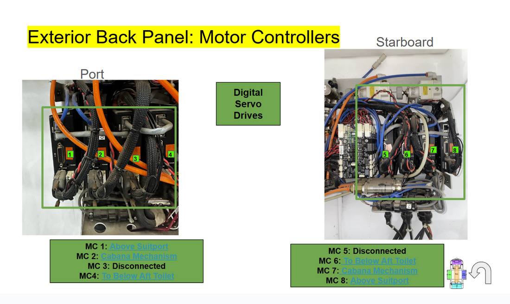

SEV Electrical Documentation & Repairs
Goals: Create an organized, easy-to-navigate record of important SEV components and connections, and rewire and organize loose or damaged cables.
Results: Documented most connections and parts in Google Slides, including manufacturer part links and links between related slides.
Skills: Documentation, organization, wire management